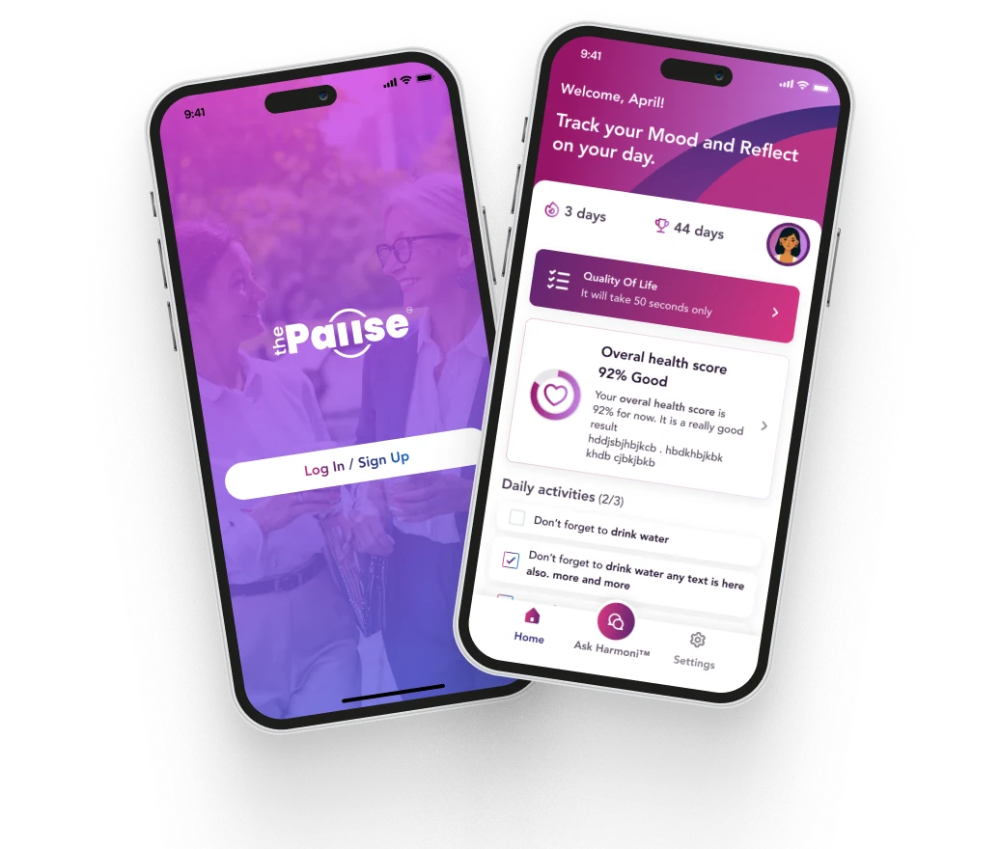
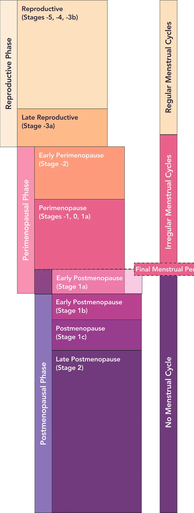
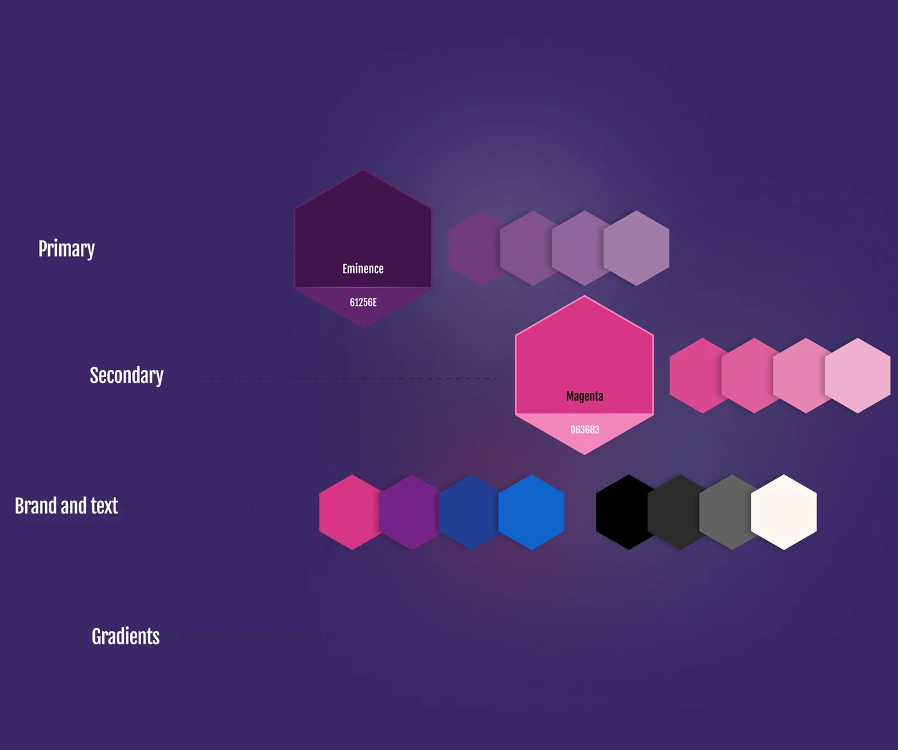
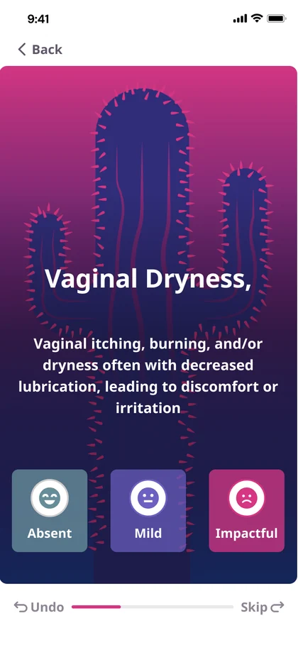
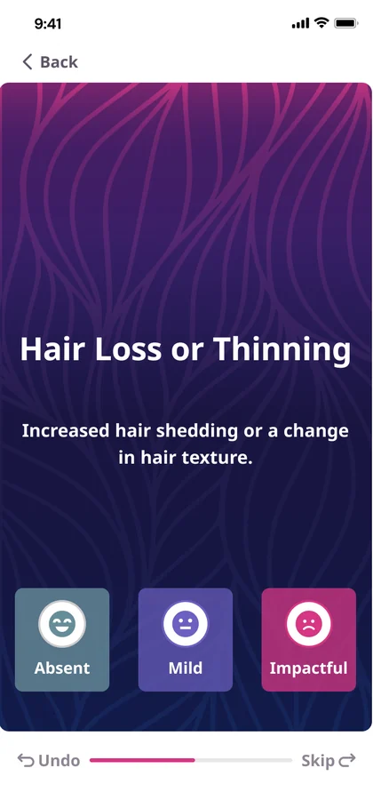
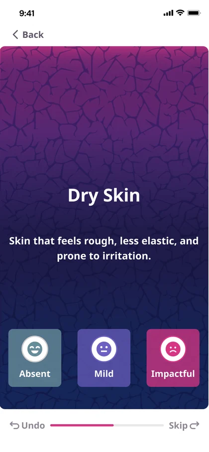
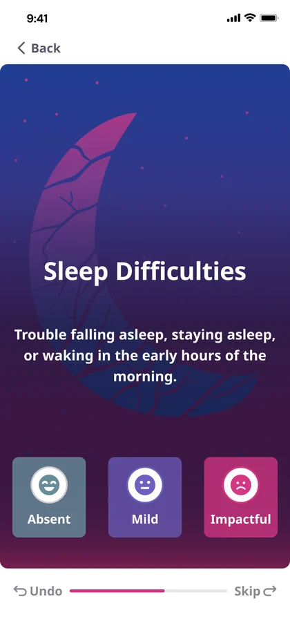
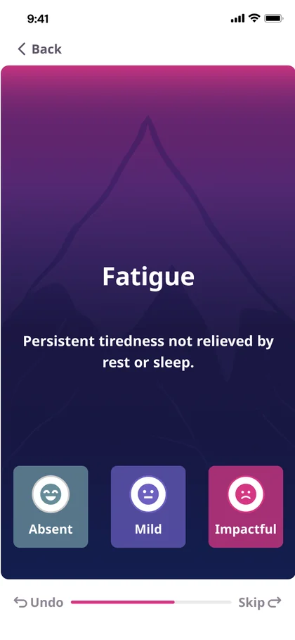
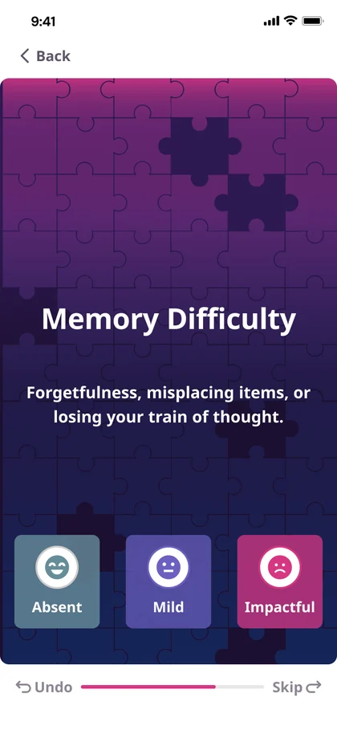

Measured in testing
+30% task accuracy
Interactive prototypes improved task accuracy by 30% in usability testing.
ThePause · Product Design Case Study
An AI-powered menopause companion, from concept to MVP.

ThePause is a startup founded by a well-known wellness influencer, promoting healthy habits and active lifestyles for women in menopause. The founder had no technical background, but brought an AI assistant idea and a real wish to support women.
We started with a concept, logo drafts, community feedback and an AI assistant for chat, Dr. Mia, giving check-ins, activity levels, menopause stage assessments and recommendations. The goal: a modern, visually appealing app that pulls in data from fitness apps and wearables, plus her own check-ins, and keeps her active without being intrusive.
We gathered requirements and analysed user stories, pain points, medical processes and competitor strategies. A mind map, empathy map, user persona, competitor analysis, MoSCoW prioritisation and an information structure turned that into requirements.
The app had to include:
We worked in an agile way: a Slack channel, two meetings a week for results and approvals, and wireframes to agree the flows for each iteration. The first MVP covered registration and profile creation, with more detail added sprint by sprint.

From design preferences and the mood board, we created a style guide, a design system and components. Generous gradients give the app a feminine feel, and pink, purple and navy keep it in line with the partner’s other products.

The component library grew with the product, from one iteration to the next.
With a medical expert
We streamlined the medical data collection algorithm together, which made the stage assessment noticeably more accurate.
The feature women returned to
Daily symptom tracking began as a repetitive medical-style list — important to complete, but tedious to use. I replaced it with a sequence of illustrated, swipeable cards: one symptom at a time, rated Absent, Mild or Impactful. Friendly metaphors (a cactus for dryness, puzzle pieces for memory), Undo, Skip and visible progress made a sensitive check-in feel lighter and more manageable.
The redesigned experience became the app's most popular feature, turning a previously avoided task into a more engaging daily interaction. That mattered beyond aesthetics: tracking only works as a habit when people want to return.






Flows, components, screens and even element positions were tested with users as often as possible: A/B tests, polls and conversations with the community.
What feedback added
Design outcome
Measured in testing
Interactive prototypes improved task accuracy by 30% in usability testing.
Product adoption
Illustrated symptom cards turned a repetitive daily checklist into the app's favourite interaction.
Next
The next iteration widened the audience and rebuilt the brand.
Product discovery · Healthcare UX · Design systems · Prototyping · Usability testing · Illustration direction · Working with medical experts
Next project